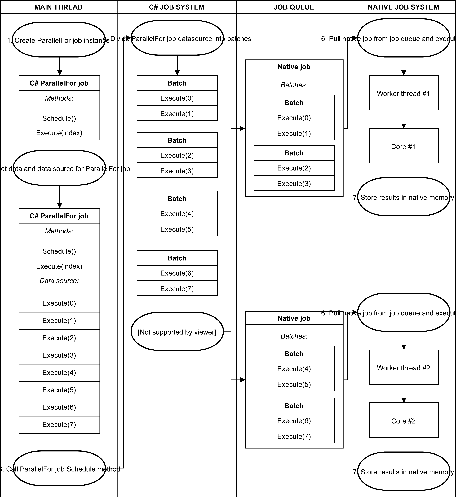

以下内容均来自官方文档和一些个人的理解
JobSystem
JobSystem（作业系统）是DOTS提供的多线程解决方案，通过JobSystem和Burst编译器的配合，能极大提升代码生成质量。JobSystem与Unity原生的作业系统相集成，能避免超过CPU核心数的线程带来的Context Switch（上下文切换）
-
Job作业的概念
这里的所说的
Job（作业，官方这么叫的）并不等同于以前学过的Task（任务）和ThreadPool（线程池），但都是基于多线程实现的异步。一个作业就是一项特定任务的其中一个小的工作单位（官方定义）。作业通过接收参数并且对一些数据副本和NativeContainer进行操作
-
JobSystem作业系统的概念
我们先来看一下传统多线程在游戏开发中可能会带来的问题：
- 多线程往往被用于一些长时间运行的任务，但是在游戏开发中，往往会有许多的生命周期不长的小指令。如果为这些小指令都分配一个线程，那么导致的结果是，系统将会同时存在许多线程，这会造成CPU和操作系统处理的压力.
- 传统上会通过Task或者ThreadPool的方法来缓解线程生命周期的问题。但是也可能会出现这么一种情况：在某一时间同时激活大量线程，这是极有可能发生的。我们都知道，当线程数多于CPU核心数的时候，将会造成频繁的 Context Switch（上下文切换）。所谓的上下文切换是指：在线程的执行过程中，暂停并保存当前线程的状态，然后处理另外一个线程，处理结束之后在接着处理最开始的那个线程。Context Switch 是资源密集型的一个过程，应该尽力避免。
为了解决以上问题，DOTS为我们提供了JobSystem。JobSystem是通过管理作业来管理多线程代码，并且跨多个CPU核心来管理一组工作线程，C# Job System（我们之后写的Job） 和 Unity Native Job System（unity原生的Job） 共享工作线程worker threads。
它有以下特点：
- 每个CPU核心对应一个工作线程；
- 当工作线程数大于CPU核心数时将作业放入作业队列中等待执行（这就是为什么等避免Context Switch的原因）；
- 作业系统会管理依赖关系以保证作业以适当的顺序执行（如果 jobA 依赖于 jobB，作业系统将确保 jobA 不会在 jobB 完成之前开始执行）；
- 一旦作业被调度，就不能被中断；
-
JobSystem的安全系统
JobSystem会检测出所有潜在的资源竞争条件，这是JobSystem最基本的安全系统。
JobSytem会对每一个Job发送其需要操作数据的副本，并且规定了每一个Job只能对数据的副本进行访问，而不是直接对主线程的数据进行引用。这种复制数据的方式意味着Job只能访问 blittable数据类型。
拷贝数据副本的过程是这样的：JobSystem通过
memcpy()方法复制blittable类型数据，并在 Unity 的托管部分和本机部分之间传输数据。在调度作业时，系统又使用memcpy()将数据放入本机内存，并在执行作业时让托管端访问该副本。此外JobSystem封装了一个特殊的缓冲区（就是之后会提到的
NativeContainer）用来访问主线程数据，并且在切换Job时，会转交该Job的所有权（读写权），因此可以确保只有一个作业进行写入（JobSystem支持多个Job读取同一个NativeContainer）。 -
NativeContainer
JobSystem拷贝数据的方式虽然能带来安全，但是带来的结果是每一个作业的结果数据都被隔离到每一个副本中。而我们在开发中往往需要获得原数据（主线程数据）的引用而不是拷贝的副本数据。因此需要把结果存储到一种名为
NativeContainer的共享内存中。NativeContainer是一种相对安全的托管值类型，它包含了一个指向非托管分配的内存地址的指针。它允许Job访问主线程共享的数据，而不是使用副本。前面提到了
NativeContainer是一种托管的值类型，因此很容易产生垃圾，而且不会自动GC掉，所以需要手动调用Dispose()方法来进行垃圾回收。当然，如果忘记手动GC，系统会丢出异常。-
常用的NativeContainer类型
Unity自带了一个名为
NativeArray的NativeContainer，并且可以通过NativeSlice来对NativeArray进行操作。此外 ECS包中扩展了
Unity.Collections命名空间以包含其他类型的NativeContainer：NativeList：可调整大小的 NativeArray。NativeHashMap：键/值对。NativeMultiHashMap：每个键有多个值。NativeQueue：先进先出 (FIFO) 队列。
-
NativeContainer和安全系统
JobSystem中的安全系统会跟踪在
NativeContainer中读写的内容。该安全系统对 NativeContainer 主要包含了以下两个部分：
DisposeSentinel：负责检测内存泄漏，如果未正确释放内存则报错AtomicSafetyHandle：负责转交 NativeContainer 的所有权，如果两个调度的作业正在写入相同的 NativeArray 则会抛出异常
之前提到Job拥有
NativeContainer的读写权限，但是JobSystem不允许多个 Job 同时拥有对一个NativeContainer的写入权，因此我们往往会对不需要写入权的NativeContainer加上[ReadOnly]特性，以减少性能影响[ReadOnly] public NativeArray<int> readArray;PS：安全系统无法防止从作业中访问具体数据，因为访问静态数据时会绕过所有的安全系统，并引起Crash
-
Allocator分配类型
在创建
NativeContainer时必须指定所需的内存分配类型，Unity为我们提供了以下三种Allocator类型：Allocator.Temp：最快的分配速度，适用于一帧或者更短的生命时长。不应该使用Temp将NativeContainer分配给 Job，在方法return前要调用Dispose()方法。Allocator.TempJob：分配速度比 Temp 慢比 Persistent 快，适用于4帧的生命时长。若4帧内没有调用调用Dispose()方法，则会打印警告。大多数小Job都应该使用TempJob 分配类型。Allocator.Persistant：最慢的分配速度，但是可以在任意时间内持续存在。该分配类型会直接调用malloc,在较长时间的Job可以使用这种分配类型，但对于注重性能的项目来说一般不建议使用。
//参数1：NativeArray的大小 //参数2：NativeArray的内存分配类型 NativeArray<float> result = new NativeArray<float>(1, Allocator.TempJob);
-
-
Job的创建
要在Unity中创建作业，必须实现
IJob接口。"作业"是 Unity 中对任何实现
IJob接口的 struct 总称。定义一个Job，需要实现以下三点：
- 实现
IJob的 struct - 成员变量只能是
blittable或NativeContainer两种类型之一 - 需要一个名为
Excute()的方法，并在其中实现该作业
执行作业时，
Excute()方法在单个核心上运行一次。注意：在设计Job时，除了
NativeContainer，其他的数据都是对数据的副本进行操作简单作业定义示例
// 将两个浮点值相加的作业 public struct MyJob : IJob { public float a; public float b; public NativeArray<float> result; public void Execute() { result[0] = a + b; } } - 实现
-
Job的调度
要在主线程种调度作业，必须：
- 实例化该Job
- 填充Job数据
- 调用
Schedule方法
调用
Schedule方法会将该作业放入作业队列中等待执行，并返回一个JobHandle，以便在适当的时间执行。一旦作业被调度，就不能被中断（我不太确定是指调用Schedule之后就不能中断，还是指从执行后不能中断）。调度作业的示例
// 实例化作业 NativeArray<float> result = new NativeArray<float>(1, Allocator.TempJob); // 填充作业数据 MyJob jobData = new MyJob(); jobData.a = 10; jobData.b = 10; jobData.result = result; // 调度作业 JobHandle handle = jobData.Schedule(); // 等待作业完成 handle.Complete(); // NativeArray 的所有副本都指向同一内存，您可以在"您的"NativeArray 副本中访问结果 float aPlusB = result[0]; // 释放由结果数组分配的内存 result.Dispose(); -
JobHandle和依赖项
Schedule通过返回JobHandle来获得该作业的的依赖项。如果一个作业依赖于另一个作业的结果，则可以将第一个作业的JobHandle作为参数传递给第二个作业的Schedule方法。JobHandle firstJobHandle = firstJob.Schedule(); secondJob.Schedule(firstJobHandle);如果一个Job有很多个依赖项，则可以用
JobHandle.CombineDependencies静态方法来合并这些依赖并传给ScheduleNativeArray<JobHandle> handles = new NativeArray<JobHandle>(myJob, Allocator.TempJob); JobHandle jh = JobHandle.CombineDependencies(handles);在
Schedule时，作业并不会开始执行，直到作为依赖项被访问或者调用Complete方法。Complete方法主要有以下几个作用：- 可以强制代码在主线程中等待作业完成；
- 在缓存中刷新作业并启动执行过程；
- 将该作业的
NativeContainer的所有权交还给主线程（否则主线程不能安全地访问NativeContainer）； - 清除安全系统的状态；
多个作业和依赖项的示例
Job代码:
// 将两个浮点值相加的作业 public struct MyJob : IJob { public float a; public float b; public NativeArray<float> result; public void Execute() { result[0] = a + b; } } // 将一个值加一的作业 public struct AddOneJob : IJob { public NativeArray<float> result; public void Execute() { result[0] = result[0] + 1; } }主线程代码:
// 创建单个浮点数的本机数组以存储结果。此示例等待作业完成 NativeArray<float> result = new NativeArray<float>(1, Allocator.TempJob); // 设置作业 #1 的数据 MyJob jobData = new MyJob(); jobData.a = 10; jobData.b = 10; jobData.result = result; // 调度作业 #1 JobHandle firstHandle = jobData.Schedule(); // 设置作业 #2 的数据 AddOneJob incJobData = new AddOneJob(); incJobData.result = result; // 调度作业 #2 JobHandle secondHandle = incJobData.Schedule(firstHandle); // 等待作业 #2 完成 secondHandle.Complete(); // NativeArray 的所有副本都指向同一内存，您可以在"您的"NativeArray 副本中访问结果 float aPlusB = result[0]; // 释放由结果数组分配的内存 result.Dispose(); -
ParallelFor 作业
在游戏中，经常会有对大量对象执行相同操作的需求（比如怪物集群行为等）。因此Unity提供了一种ParallelFor（相似作业或并行作业）来处理这种情况。
所谓 ParallelFor 作业是 Unity 中对于任何实现
IJobParallelFor接口的结构的统称。ParallelFor以一个数据
NativeArray作为其数据源，在多个CPU核心上运行。如果有多个NativeArray，JobSystem将不会知道到底哪一个是数据源，对不是数据源的NativeArray应该加上[ReadOnly]特性和原来一样还是一个Job一个核心，只是每一个Job负责处理几个
Excute，这根据给出的批次而定。**批次batches：**在调度 ParallelFor 作业时，C# JobSystem 将ParallelFor分成多个批次在多个核心之间分配任务，每个批次包含一小部分 Execute 方法。要注意批次分得太少会导致 Work Thread 不断重建的性能损耗，分得太多会增加CPU单核的压力。
ParalleFor 对数据源中的每一项都调用一次
Execute方法。并且Execute方法中有一个整形的参数作为访问该作业中数据源的单个元素的索引。
简单说一下这个图：
- 在主线程中创建
ParallelFor实例 - 填充数据到
ParallelFor - 调用
ParallelFor的Schedule方法 - 对
ParallelFor分批次，这里分成了4个批次 - 把这些批次分配给几个Native Job，并放入作业队列。这相当于把几个
Excute注册到一个Native Job的Excute中 - 从作业队列中拿出 Native Job 并放到Core上执行。也就是说现在一个核心上会依次执行4个
Execute - 执行结果放入内存中
PS：当一个 Native Job 提前完成自己的batches时，会从其他的 Native Job 偷取一部分batches（剩余batches的一半），然后继续执行。
在调度 ParallelFor 作业时，必须指定要拆分的 NativeArray 数据源的长度，一般直接取NativeArray的数组长度作为执行次数，一次处理一个数据。
调度 ParallelFor 作业的示例
作业代码：
// 将两个浮点值相加的作业 public struct MyParallelJob : IJobParallelFor { [ReadOnly] public NativeArray<float> a; [ReadOnly] public NativeArray<float> b; public NativeArray<float> result; public void Execute(int i) { result[i] = a[i] + b[i]; Debug.Log($"index: {i},result: {result[i]}"); } }主线程代码：
NativeArray<float> a = new NativeArray<float>(2, Allocator.TempJob); NativeArray<float> b = new NativeArray<float>(2, Allocator.TempJob); NativeArray<float> result = new NativeArray<float>(2, Allocator.TempJob); a[0] = 1.1f; b[0] = 2.2f; a[1] = 3.3f; b[1] = 4.4f; MyParallelJob jobData = new MyParallelJob(); jobData.a = a; jobData.b = b; jobData.result = result; // 调度作业，为结果数组中的每个索引执行一个 Execute 方法，且每个处理批次只处理一项 JobHandle handle = jobData.Schedule(result.Length, 1); // 等待作业完成 handle.Complete(); // 释放数组分配的内存 a.Dispose(); b.Dispose(); result.Dispose();控制台打印结果：
index: 0,result: 3.3 index: 1,result: 7.7 - 在主线程中创建
-
ParallelForTransform 作业
ParallelForTransform作业是另一种类型的 ParallelFor 作业，专为在 Transforms 上操作而设计。ParallelForTransform作业是 Unity 中对于任何实现IJobParallelForTransform接口的作业的统称。调度时需要传入
TransformAccessArray：一个包含所有需要的Transform的数组，注意TransformAccessArray也是非托管值类型，需要手动Dispose调度 ParallelForTransform 作业的示例
作业代码：
// 更新物体位移的作业 struct PositionUpdateJob : IJobParallelForTransform { [ReadOnly] public NativeArray<Vector3> velocity; public float deltaTime; //第二个参数可以获取到Transform public void Execute(int i, TransformAccess transform) {
transform.position += velocity[i] * deltaTime;
}
}
```
主线程完整Mono代码：
```C#
public class ShpereMove : MonoBehaviour
{
GameObject sphere1;
GameObject sphere2;
NativeArray<Vector3> result;
TransformAccessArray transArray;
PositionUpdateJob jobData;
JobHandle handle;
//在Start中初始化Job
void Start()
{
//创建两个球体
sphere1 = GameObject.CreatePrimitive(PrimitiveType.Sphere);
sphere2 = GameObject.CreatePrimitive(PrimitiveType.Sphere);
sphere1.transform.position = Vector3.zero;
sphere2.transform.position = Vector3.zero;
//创建Job
jobData = new PositionUpdateJob();
Transform[] transforms = new Transform[2];
transforms[0] = sphere1.transform;
transforms[1] = sphere2.transform;
//获取所有物体的Transform，并放到数组中
transArray = new TransformAccessArray(transforms);
result = new NativeArray<Vector3>(2, Allocator.TempJob);
result[0] = Vector3.forward * 2f;
result[1] = Vector3.forward * 3f;
jobData.velocity = result;
}
//填充每帧变更需要改变的数据 并 调度作业
void Update()
{
jobData.deltaTime = Time.deltaTime;
handle = jobData.Schedule(transArray);
}
// 保证当前帧内Job执行完毕
private void LateUpdate()
{
handle.Complete();
}
// 释放数组分配的内存
private void OnDestroy()
{
transArray.Dispose();
result.Dispose();
}
}
```
-
C# JobSystem 注意事项
-
不要从作业访问static数据
之前提了一嘴，从作业访问静态数据时会绕过所有安全系统。如果访问错误的数据，通常可能会以意想不到的方式导致 Unity 崩溃。官方说在未来的版本将会增加
static analysis来阻止这种用法。 -
刷新已调度的批次
如果不刷新批次，那么调度将会延迟到主线程等待batch结果时才执行。
可以使用
JobHandle.ScheduleBatchedJobs刷新已调度的批次,以此让作业开始执行。但是JobHandle.ScheduleBatchedJobs会带来性能损耗。通常情况下都建议使用Complete启动执行过程在ECS中，会隐式刷新批次，不需要手动调用
JobHandle.ScheduleBatchJobs -
不要尝试更改 NativeContainer 的内容
由于缺少 ref 返回值，因此无法直接更改 NativeContainer 的内容。比如以下错误的操作：
myNativeArray[0] = 5; //或者 var temp = myNativeArray[0]; temp = 5;正确的做法是，必须将索引中的数据复制到本地临时副本，修改该副本，然后将其存回，如下所示：
var temp = myNativeArray[0]; temp.memberVariable = 0; myNativeArray[0] = temp; -
调用 JobHandle.Complete 以重新获得所有权
要跟踪数据所有权，必须先完成依赖项，然后主线程才能再次使用这些依赖项。
仅检查
JobHandle.IsCompleted是不够的，需要手动调用Complete，否则会造成内存泄漏。此外Complete会清理安全系统的状态，只能从主线程调用
Schedule和Complete。如果一个作业依赖于另一个作业，请使用JobHandle来管理依赖关系，而不是尝试在作业中调度作业。**拥有作业所需的数据后就立即在作业上调用
Schedule，并仅在需要结果时才开始在作业上调用Complete。**例如：如果在这一帧结束和下一帧开始之间的一段时间没有作业正在运行，并且可以接受一帧延迟，则可以在这一帧结束时调度作业，并在下一帧中使用其结果。请注意，默认情况下，作业对
NativeContainer类型具有读写访问权限。请在适当时使用[ReadOnly]特性来提高性能。在 Unity Profiler 窗口中，主线程上的标记
WaitForJobGroup表示 Unity 正在等待工作线程上的作业完成。这说明你的代码在什么地方引入了数据依赖。请查找JobHandle.Complete来查看是什么依赖关系导致了主线程的等待。Jobs有一个
Run函数，可以使用此函数代替Schedule立即在主线程上执行作业。可将此函数用于调试。在作业中分配托管内存非常慢，会导致 Unity Burst 无法使用。
-